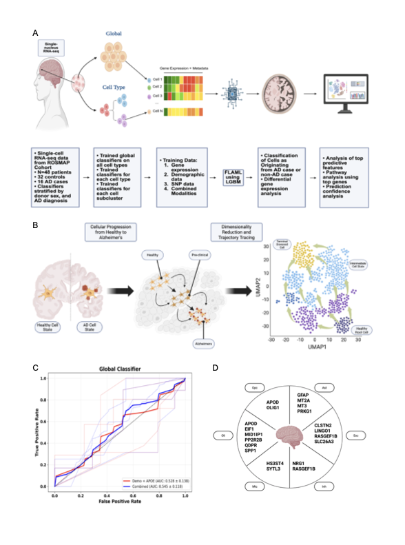
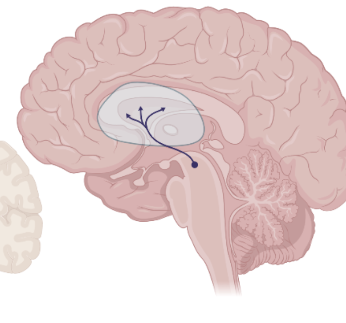
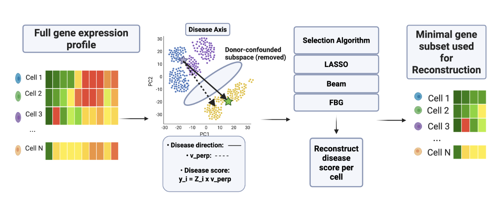
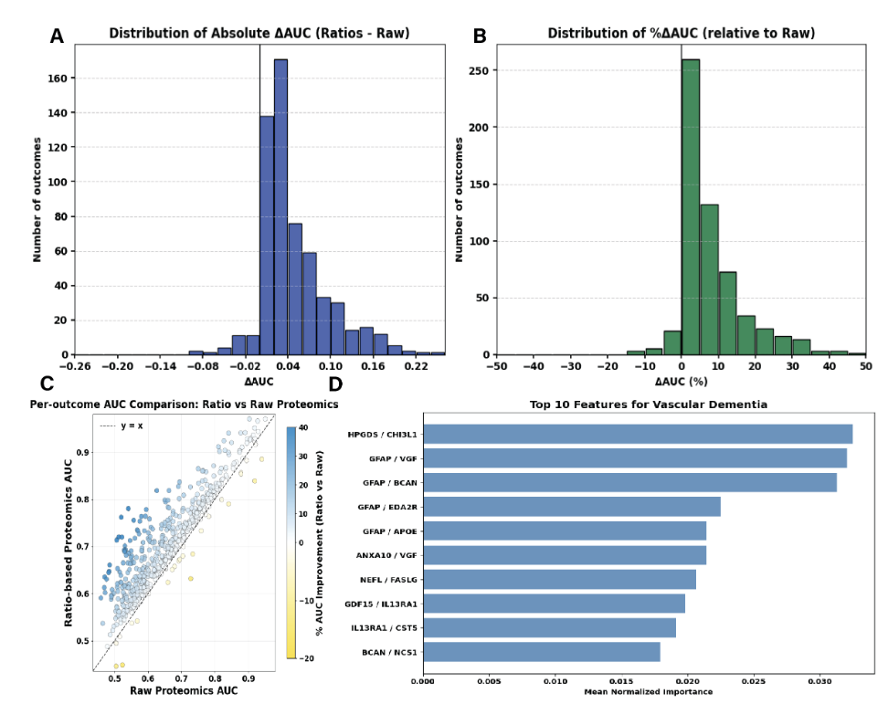
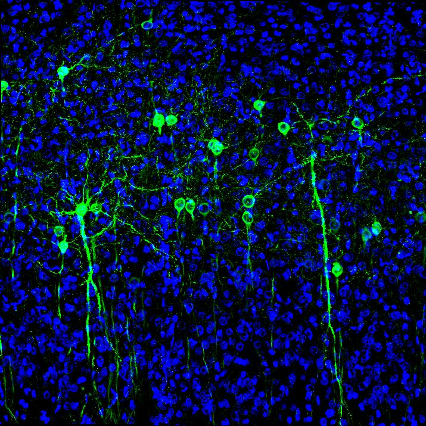

Research
I work at the intersection of machine learning and biomedicine, with a focus on single-cell genomics and neurodegenerative disease. I am interested in how we can use high-dimensional genomic data to identify disease mechanisms and therapeutic targets.
|
|

|
Single-cell machine learning uncovers genetically anchored, cell-type specific programs of Alzheimer's disease
Adithya V. Madduri, Randall Ellis, Chirag M. Lakhani, David A. Bennett, Chirag J. Patel
medRxiv, 2026
medRxiv
Cell-type-resolved machine learning on single-cell RNA-seq data from the prefrontal cortex uncovers genetically anchored programs driving Alzheimer's disease.
|
|

|
Cell-type–Resolved Machine Learning Reveals Excitatory Neuron Perturbations in Parkinson's Disease Prefrontal Cortex
Adithya V. Madduri, Chirag J. Patel
20th International Conference on Alzheimer's & Parkinson's Diseases, 2026
abstract
Single-cell machine learning identifies excitatory neuron-specific perturbations in Parkinson's disease prefrontal cortex, with proteostasis and excitatory neuron vulnerability as key findings.
|
|

|
Sparse Control of Disease-Aligned Gene Programs in Single-Cell Transcriptomics
Adithya Madduri, Chirag J. Patel
ICLR 2026 Workshop on Generative AI in Genomics & ICLR 2026 Workshop on Machine Learning for Genomics Explorations
OpenReview
Sparse manifold control methods applied to single-cell transcriptomics identify donor-robust perturbation targets and disease-aligned gene programs.
|
|
|
Selection of Genetic Conditions for Multi-State Genomic Newborn Screening in BEACONS-NBS
Nina B. Gold, Britt A. Johnson, Harini Somanchi, ..., Adithya V. Madduri, ..., Robert C. Green
medRxiv, 2026
medRxiv
A multi-state study integrating whole genome sequencing into newborn screening; validated a condition list through expert consensus and community input.
|
|

|
Protein Compositional Ratio Representation (PCRR) Systematically Improves Human Disease Prediction
Adithya V. Madduri, Randall J. Ellis, Chirag J. Patel
International Conference on Research in Computational Molecular Biology (RECOMB), 2026
bioRxiv
A protein representation method based on compositional ratios that systematically improves prediction of human diseases.
|
|

|
Integrating Gene Expression, Pseudotime, and Imputed SNPs to Predict Alzheimer's Disease Across Major Brain Cell Types Using Machine Learning
Adithya V. Madduri, Randall J. Ellis, Chirag J. Patel
The American Society of Human Genetics Annual Meeting, 2025
abstract
Integrates gene expression, pseudotime trajectories, and imputed SNPs to build cell-type-specific predictive models for Alzheimer's disease across major brain cell types.
|
|
|
The role of tomato wild relatives in breeding disease-free varieties
Hamid Khazaei, Adithya Madduri
Genetic Resources, 3(6), 64–73, 2022
paper
Reviews the role of wild tomato relatives as sources of disease resistance genes for cultivating improved varieties.
|
|